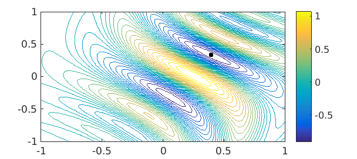
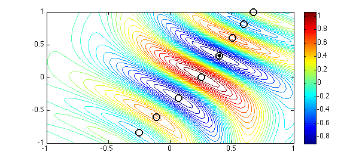
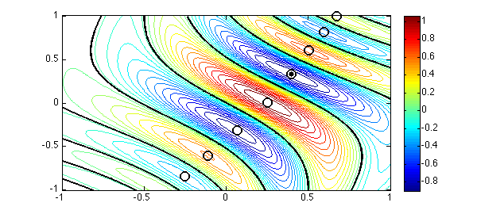
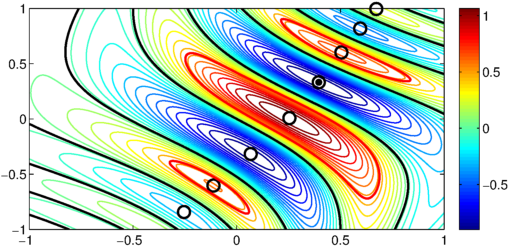

LW = 'LineWidth'; lw = 1; MS = 'MarkerSize'; ms = 20;
1. The Rosenbrock function
One of the very first Chebfun examples [2] demonstrated how standard 1D Chebfun can do a reasonable job of minimizing or maximizing a function defined on a 2D rectangle, such as the Rosenbrock function [1]:
f = @(x,y) (1-x).^2 + 100*(y-x.^2).^2;
With the introduction of Chebfun2 in 2013, this take become much simpler.
F = chebfun2(f, [-1.5 1.5 -1 3]); [minf, minx] = min2(F)
minf =
1.091393642127514e-11
minx =
0.999996684946674 0.999993360274207
We can plot the function and the computed minimum like this:
contour(F, 10:10:300, LW, lw), colorbar, shg hold on, plot(minx(1), minx(2), '.k', MS, ms), hold off

2. A function with several local minima
The example [2] explained how Chebfun computed these results: by taking maxima along 1D slices, and then taking the maximum of these results. For functions with multiple local minima, like the one below, this meant the splitting on flag needed to be set.
f = @(x,y) exp(x-2*x.^2-y.^2).*sin(6*(x + y + x.*y.^2));
Chebfun2 uses a different algorithm for locating maxima and minima, and so splitting is not required in this case. The following computation is much faster than before.
tic F = chebfun2(f); [minf, minx] = min2(F) toc
minf = -0.969232500643146 minx = 0.395759632251660 0.331573976807090 Elapsed time is 0.320943 seconds.
Here is a plot, again with the computed global minimum.
contour(F,30, LW, lw), colorbar, hold on plot(minx(1), minx(2), '.k', MS, ms)

In fact, since Chebfun2 is really working with a 2D representation, we can investigate more deeply.
For example we can compute all the stationary points of $f$ and add these to our contour plot:
tp = roots(grad(F)) plot(tp(:,1), tp(:,2), 'ko', MS, 12, LW, 2)
tp = -0.254107550759548 -0.842267634382810 -0.112229538510290 -0.603133543918113 0.067365721534436 -0.317601643415148 0.253778760811318 0.007586184707220 0.395759627601432 0.331573987886845 0.504693529063450 0.601204260241067 0.595308872488306 0.817030764537116 0.672904440396062 0.994413300108208

We can make chebfuns of the zero level curves of $F$:
g = roots(F); plot(g, 'k', LW, 2), shg

Or we can even make chebfuns of the $.5$ level curves of $F$:
g = roots(F - .5); plot(g, 'r', LW, 2), shg

References
-
H. H. Rosenbrock, "An automatic method for finding the greatest or least value of a function", Computer Journal, 3 (1960), 175-184.
-
Chebfun Example opt/Rosenbrock